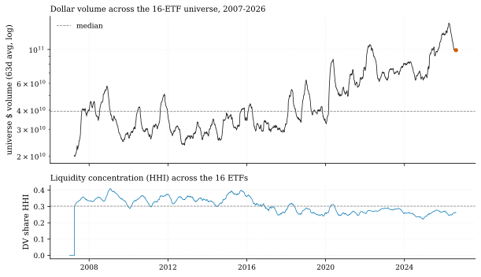
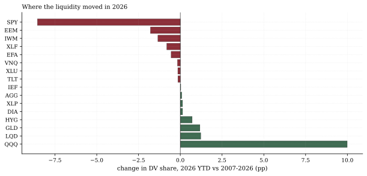
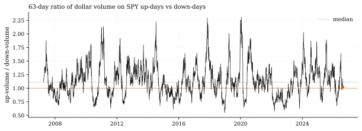

The one-paragraph version. As of Aug 14, the 16-ETF universe trades $98.9 billion a day (63-day average) — its 93.6th percentile since 2007 and triple (+201.4%) the median year's Jan–Aug. But decompose it and the mirage appears: universe share volume is up just 3.4% versus the median year (rank 8 of 19 — an utterly ordinary tape), while average prices are up 152.7%. The record volume is mostly record price. Underneath, liquidity is rotating — SPY's share of universe dollar volume has fallen 8.6 points (48.5% → 39.9%) while QQQ gained 10.0 — and the up-day/down-day volume ratio sits at 1.02 against a median of 1.11: record prices on money that is not chasing green days.
How we worked this problem
Six notes into this desk, no note had opened the panel's Volume field — every prior note read came from prices, rates, or strategy streams (the allocator capacity memo uses it separately). This issue we open it: dollar volume per ETF (Close × Volume), its level versus its own history, the price/share decomposition, where the liquidity rotated, and whether volume is chasing the rally. One caveat stated up front: our universe is 16 ETFs — the institutional beta complex — so single-name retail churn is invisible to us here and enters through the external leg.
The data audit
| # | Source | Coverage | As-of | Notes |
|---|---|---|---|---|
| 1 | 16-ETF daily panel, Volume field | 4,935 sessions, 2007-01-03 → | 2026-08-14 | First note use of Volume; yfinance-reported shares |
The exhibits
The level. Universe dollar volume (63-day average): $98.93B, the 93.6th percentile of all readings since 2007, +151.2% above the all-days median ($39.38B). Same-window comparison across years (Jan 1–Aug 14): 2026 ranks #1 of 19 years, +201.4% above the median year.

The mirage. Decompose dollars = shares × price: universe share volume is +3.4% vs the median year (rank 8 of 19); the average price level is +152.7%. The same number of shares changes hands at two-and-a-half times the price. A genuine activity boom this is not — and that distinction matters for every "record volume" headline that fails to make it.
The rotation. 2026 dollar-volume share vs the 2007–2026 share: QQQ +9.99pp, LQD +1.22pp, GLD +1.18pp gain; SPY −8.55pp (48.47% → 39.92%), EEM −1.79pp, IWM −1.34pp lag. Liquidity is concentrating in the growth complex and gold at the expense of the broad-market parking spot and small caps. Concentration across the 16 (HHI of volume share) is actually down — 0.262 vs a 0.302 median, 23rd percentile — because SPY's own dominance is what fell.

The tell: volume is not chasing green days. The 63-day ratio of dollar volume on SPY up-days to down-days reads 1.017 — below its historical median of 1.112 (36th percentile), inside a 2026 range of 0.68–1.64. Record prices are being carried on balanced, slightly subdued participation. External data agrees on the mechanism: VandaTrack (via Yahoo Finance) shows total retail turnover at record highs — the 99.7th percentile of 2012–2026 — while one-month net buying is down to $13B, the weakest pace since the COVID era: booming churn, pickier buying. Citadel Securities' July market-intelligence report runs the same direction (retail cash volumes 60% above the 2025 average). Our ETF-complex read and the single-name retail data tell one story: activity without conviction.

So what — opportunities
- Execution is cheap, positioning is not crowded by flow. Normal share volume at record dollar values means the complex absorbs size without strain — the capacity memo's ADV-based ceiling ($985.0m;
docs/capacity/capacity_memo.json, as of Aug 14) rests on dollar ADV, which this tape supplies in abundance. - Follow the rotation, fade the mirage. Volume share migrating to QQQ and GLD is the market's own revealed preference; the laggards (EEM, IWM) are where breadth-normalization fuel sits if the Rotation Monitor's narrow-record thesis plays out.
So what — risks
- Dollar-volume mirage risk. Any risk model or capacity estimate keyed to dollar volume inherits the 2.5× price level; the honest input for activity is share volume — up 3.4%.
- Concentration of liquidity in one complex. QQQ absorbing 10 points of volume share means the tape's liquidity is increasingly one factor's liquidity; a growth-complex air pocket now hits both price and the market's ability to trade.
- Sub-conviction tape. Up/down volume below median at record highs is historically a fragile configuration — rallies that volume doesn't confirm are rallies that unwind faster when the spell breaks. Descriptive, not a timing signal.
Machinery
All numbers: analysis.py → assets/numbers.json, regenerated from house data in a single run before publication.
Limitations
ETF volume fields are exchange-reported shares (splits/dividends handled by the data vendor); our 16-ETF complex excludes single names — retail single-name churn is external-only; dollar-volume percentile uses the full 2007+ history in which the low-price early years mechanically depress the median; HHI across 16 ETFs measures complex-internal, not market-wide, concentration; panel as-of Aug 14.
Sources — external reading list
| Claim | Source |
|---|---|
| Retail turnover at 99.7th percentile of 2012–2026; net buying down to $13B, weakest since COVID era | Yahoo Finance / VandaTrack |
| Retail cash equity volumes 60% above 2025 average, 2× 2024 | Citadel Securities, July GMI |
| VandaTrack daily retail flow data | vandatrack.com |
Internal sources: the lineage row above. Not investment advice.
panel Volume field (first note use); dollar-volume decomposition; up/down volume ratio; share HHI